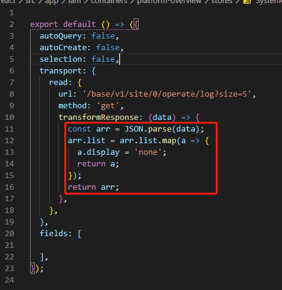
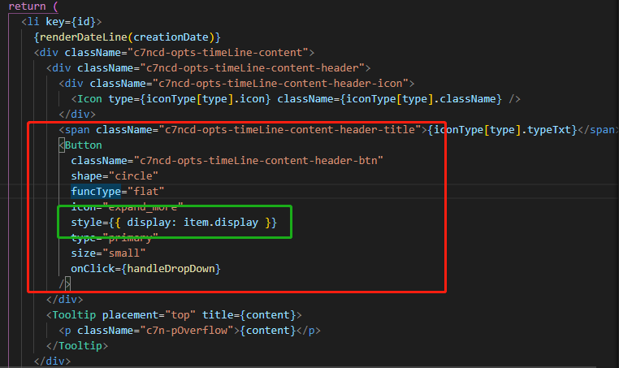

在项目上开发的时候碰到了一个这样的需求
每一个操作记录都是动态创建出来的，包括文本域，后端返回一个content表示文本的内容；每个文本都是定宽的（当然必须在这个容器内部），一旦content数据超出了文本域的定宽就会以省略号的形式表示还有更多文本，并且重点来了：超出的每个模块必须在头部展现出一个button按钮，点击button按钮能够展示更多的数据
下面说一下我刚开始的思路：通过判断content字符的长度去动态渲染这个button（不行）。
因为不仅仅content当中包括了中文字符，英文字符，还包括标点符号数字等等，不能单纯的通过此方法来去判断。
因此想了一下，可以设置一个监听器，通过监听对应的文本，判断它宽度的变化满足什么条件，从而进行页面的二次渲染，再第一次渲染的基础上加上button
经过一个大佬的指导，发现可以用此方法实现
通过new ResizeObserver()的api去监听一个dom元素的文本域变化，详细用法可以看下面这个文章，ResizeObserver是什么？ 还有这 ResizeObserver API
至于为什么要用 scrollWidth 和width来判断，懂得都懂，不懂得去查概念去，scrollWidth, clientWidth, offsetWidth的区别
我用的是react hooks，所以要实现监听，必须再useEffect里面模拟出window.onload
下面说一下我详细得解法：
要控制button得显隐，既然用了react肯定是要面向数据层来改变页面，因此在刚开始获取到这个操作记录的数据的时候，给他每一项加上一个参数叫做display，之后再在所需要渲染的button上手动加上style（这里用的是猪齿鱼pro组件的DataSet）


- 之后在useEffect当中去监听这些动态渲染的文本域
useEffect(() => {
const flow = document.getElementsByClassName('c7n-pOverflow');
if (flow && flow.length > 0) {
for (let i = 0; i < flow.length; i += 1) {
new ResizeObserver((entries) => {
entries.forEach((entry) => {
const pDom = entry.target;
const scrollW = Math.ceil(pDom.scrollWidth);
const width = Math.ceil(pDom.clientWidth);
if (scrollW > width) {
optsDs.records[i].set('display', 'block');
}
});
}).observe(flow[i]);
}
}
});注意，useEffect的最后一个参数不能写。
通过循环这个请求到list数据的文本数组，去监听每一个文本域的变化，
通过判定这个文本域的scrollWidth和width去动态地再次改变对应数据中的display属性，就能实现页面的二次渲染。
if (scrollW > width) {
optsDs.records[i].set('display', 'block');
}这是文本域的样式
p {
font-size: .12rem;
font-weight: 400;
margin: .08rem 0 0 0;
color: rgba(58, 52, 95, 0.65);
line-height: .2rem;
max-width: 4.09rem;
overflow: hidden;
text-overflow: ellipsis;
white-space: nowrap;
}这里一定是要设置宽度的，无论是width还是max-width只要能实现它超出溢出就行。